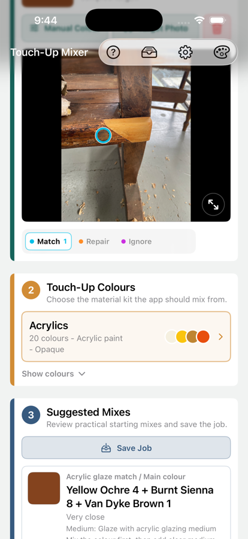
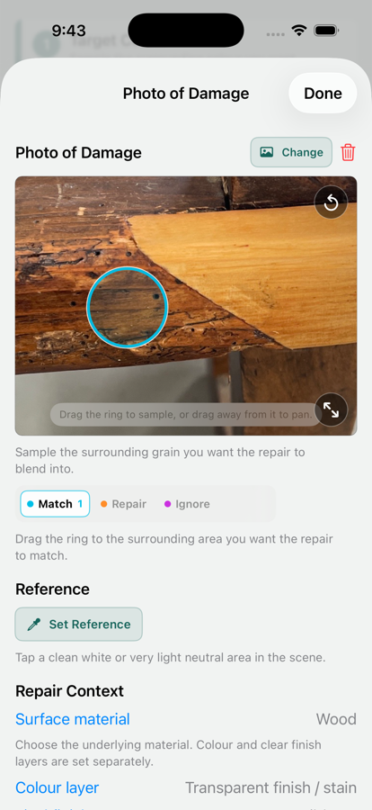
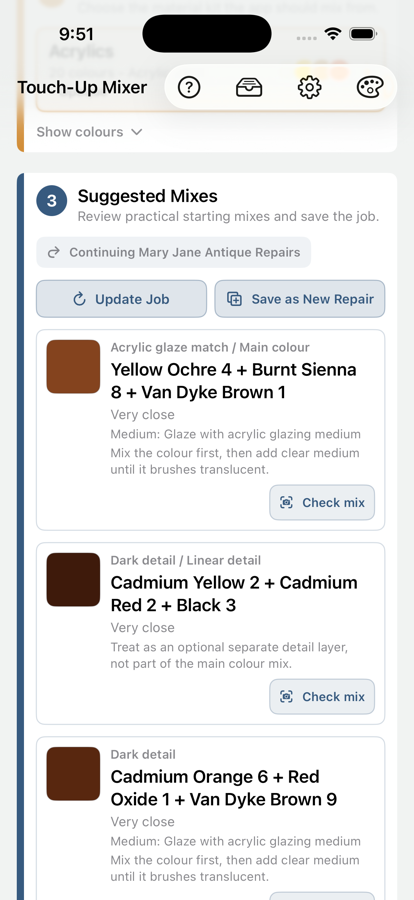
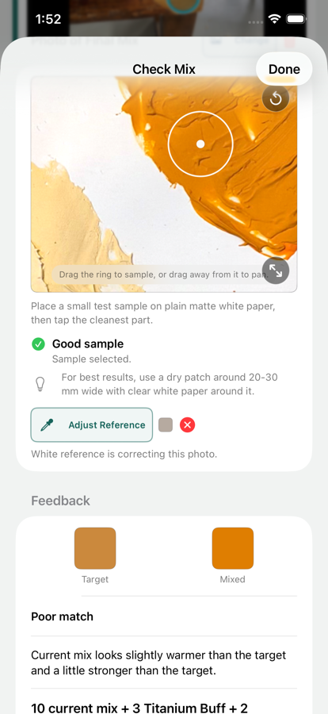
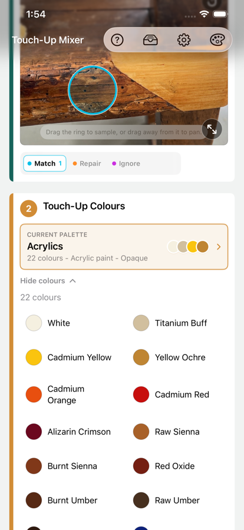
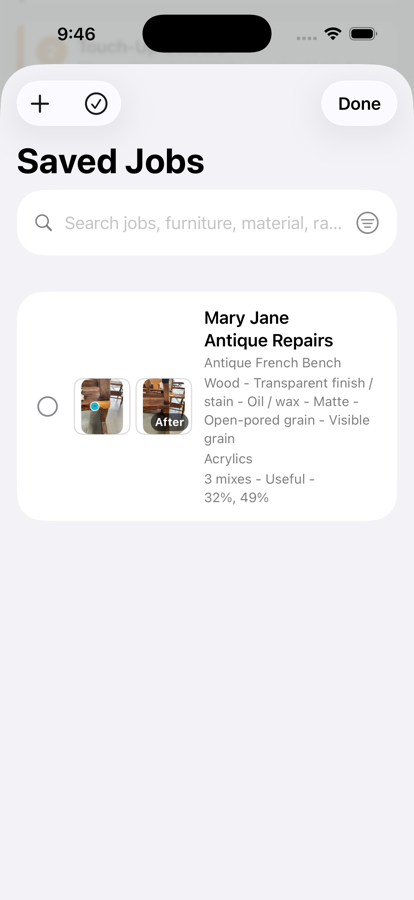

Photo-guided sampling
Place match, repair, and ignore circles so the colour options are driven by the surrounding finish, not glare, dirt, hardware, or damaged material.

Touch-Up Mixer
Use the free core workflow to sample a repair colour, compare it with your own palette, check a test mix, and save practical starting points for paint, stain, filler, shellac, putty, and more.
Built for real repair work
Touch-Up Mixer is designed for small repairs where judgement still matters. It gives you a repeatable way to sample, compare, test, adjust, and record what worked. The app is genuinely usable for free, with Pro available as a one-time unlock when your repair library, palettes, or export needs grow.



What it helps with
Place match, repair, and ignore circles so the colour options are driven by the surrounding finish, not glare, dirt, hardware, or damaged material.
Build palettes from the colours and media you actually use, including acrylics, stains, dyes, shellac tints, fillers, putty, wax, and pigments.
Get starting recipes that respect the selected medium, with shorter suggestions for translucent and solid repair materials where restraint matters.
Save and continue standalone Repairs with photos, sample points, palette choice, suggested mixes, notes, ratings, and after photos for follow-up work or future reference.
Unlock Pro to group related Repairs by client or item, reuse shared job photos, export before/after images, create Repair or Job PDFs, and manage saved work in bulk.
Free to start
Touch-Up Mixer is not a subscription. The free app covers the practical sampling, palette, suggestion, Check Mix, and standalone Repair workflow. Pro is a one-time unlock for larger libraries, job organisation, and export tools.
Free
Includes up to 5 saved Repairs, 2 palettes total, and 6 colours per palette. Bundled starter palettes count toward the palette total.
Pro
Pro is for larger repair libraries, job records, and exportable documentation. It is a one-time App Store purchase, not a subscription.
Who it is for
Touch-Up Mixer is designed for furniture and finish repairers, restorers, makers, decorators, maintenance professionals, and careful DIY repairers working with paint, stain, filler, shellac, putty, wax, pigments, and other repair media.
Palette first
A small honest palette is more useful than a large imaginary one. Touch-Up Mixer changes its suggestions based on the medium, opacity, clear modifiers, and colour set you choose.

Keep the useful details
Free lets you keep standalone Repairs and continue them later. Pro adds Jobs with client, address, item, tags, notes, shared photos, before/after image export, Repair PDFs, Job PDFs, and bulk saved-work tools.

Common questions
No. Photos and screens vary, so suggestions are practical starting points. Test the real mixture and adjust it under the lighting where the repair will be seen.
Yes. Build palettes from the colours and media on your bench so suggestions reflect the materials you can actually mix.
The free app includes photo sampling, repair-area setup, palette selection, suggested mixes, Check Mix, and saved standalone Repairs within the free capacity limits.
No. Pro is a one-time unlock for unlimited saved work, larger palettes, Jobs, shared job photos, exports, and bulk saved-work tools.
No. Photos, palettes, Repairs, Jobs, addresses, and notes remain on your device unless you choose to share an export.
Local by design
Touch-Up Mixer does not upload photos, create accounts, track users, or collect analytics. Repairs, Jobs, palettes, addresses, and notes are stored locally on your device.
Read the privacy policy